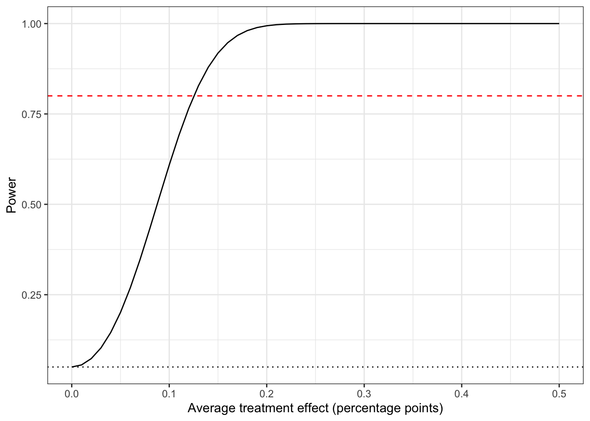
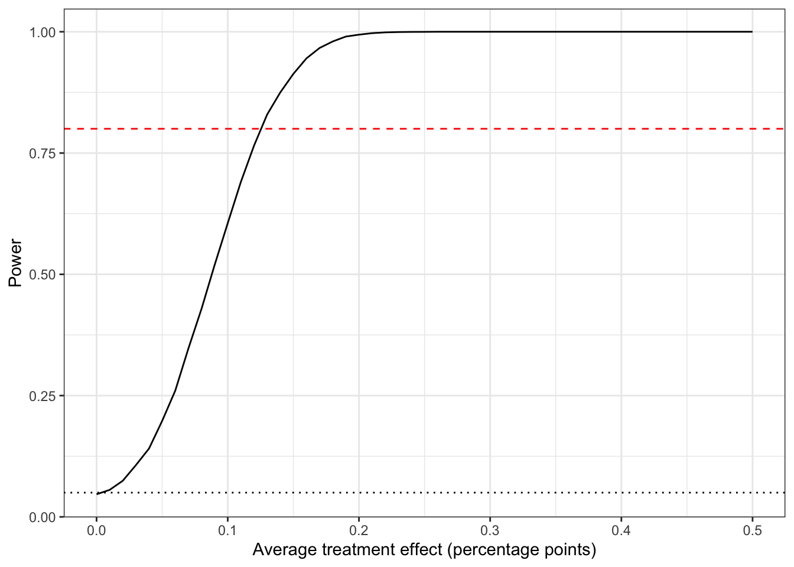

library(tidyverse)
library(haven) # to read different statistical formats
library(broom) # to generate tidy tibbles of statistical analysis
library(estimatr) # provides commonly-used linear estimators
options(digits=3)
options(scipen = 10) # No scientific notationPLSC 30600 Lab 3: Power Calculations
Power Calculations in R
We often want to figure out how large of a sample size we’ll need in order to estimate an effect of a particular size reliably. This is called the power of a design – the probability that we reject the null given that the null is false. It’s the probability of not making a Type II error (a false negative).
Power depends on both the variance of our estimator and the underlying true effect. Obviously we don’t know the latter, so we’ll have to make assumptions on the effect size to calculate power (and calculate a set of power estimates across an array of potential treatment effect sizes).
Often our outcome is binary, so we’ll be able to “worst-case” the outcome variance at \(.25\) (the variance of a binary outcome is \(p(1-p)\), so its largest possible value is \(.5^2 = .25\)). Then the parameters we want to vary are \(N_t, N_c\) and \(\tau\) (the true effect).
Alternatively, we might normalize the treatment effect in terms of “standard deviations” of the outcome (and so normalize the outcome variances to 1).
Remember that for an \(\alpha = .05\), we would reject (for an asymptotic null hypothesis test) if our observed test statistic \(T\) lands above \(1.96\) or below \(-1.96\). Given a known treatment effect \(\tau\), we know that the distribution of our test statistic (\(\frac{\hat{\tau}}{\widehat{SE(\hat{\tau})}}\)) is centered on \(\frac{\tau}{\widehat{SE(\hat{\tau})}}\) with variance \(1\) (and is normal). Therefore, we can calculate the probability of landing in the rejection region given the true assumed effect.
taus = seq(0, .5, by=.01) # Range of treatment effects to evaluate
taus [1] 0.00 0.01 0.02 0.03 0.04 0.05 0.06 0.07 0.08 0.09 0.10 0.11 0.12 0.13 0.14
[16] 0.15 0.16 0.17 0.18 0.19 0.20 0.21 0.22 0.23 0.24 0.25 0.26 0.27 0.28 0.29
[31] 0.30 0.31 0.32 0.33 0.34 0.35 0.36 0.37 0.38 0.39 0.40 0.41 0.42 0.43 0.44
[46] 0.45 0.46 0.47 0.48 0.49 0.50N = 500 # Sample size (we'll assume an equal treatment-control split)
alpha = .05 # Our rejection threshold
# Placeholder vector for power results
power = rep(NA, length(taus))
# For each possible effect, calculate the power
for (i in 1:length(taus)){
tau = taus[i] # The treatment effect
var = .25/(N/2) + .25/(N/2) # This is a "worst-case" variance (in actuality, it's impossible to have a variance of .25 if there is a non-zero treatment effect)
z_thresh <- abs(qnorm(alpha/2))# Our z-thresholds for the null hypothesis test (~1.96 for alpha = .05)
# Probability of getting in the upper rejection threshold + probability of getting in the lower
# pnorm gives the Cumulative Distribution Function (CDF) of the Normal distribution
power[i] <- pnorm(z_thresh, mean=tau/sqrt(var), sd = 1, lower.tail=FALSE) +
pnorm(-z_thresh, mean=tau/sqrt(var), sd = 1, lower.tail=TRUE)
}
power_results <- data.frame(tau = taus, power = power)
#power_results
power_results %>%
ggplot(aes(y=power, x=taus)) +
geom_line() +
geom_hline(yintercept = alpha, lty=3) + geom_hline(yintercept = .8, lty=2, col="red") +
xlab("Average treatment effect (percentage points)") +
ylab("Power") +
theme_bw()
We can also use simulation to calculate the power of a design under assumptions about the data-generating process. This is often a good strategy when we have more complex randomization schemes and so doing the simple closed-form calculations above is infeasible.
taus = seq(0, .5, by=.01) # Range of treatment effects to evaluate
N = 500 # Sample size (we'll assume an equal treatment-control split)
alpha = .05 # Our rejection threshold
NSim = 10000 # How many draws from the sampling distribution to calculate pr(rejection)
# Placeholder vector for power results
power = rep(NA, length(taus))
# For each possible effect, calculate the power
for (i in 1:length(taus)){
tau = taus[i] # The treatment effect
var = .25/(N/2) + .25/(N/2) # This is a "worst-case" variance (in actuality, it's impossible to have a variance of .25 if there is a non-zero treatment effect)
z_thresh <- abs(qnorm(alpha/2))# Our z-thresholds for the null hypothesis test (~1.96 for alpha = .05)
# Generate a bunch of treatment effects (draws from the true sampling distribution)
sim_t_stats <- rnorm(NSim, mean=tau/sqrt(var), sd = 1)
# Probability of rejection using monte-carlo simulation.
power[i] <- mean(abs(sim_t_stats) > z_thresh)
}
power_results <- data.frame(tau = taus, power = power)
power_results %>% ggplot(aes(y=power, x=taus)) + geom_line() + geom_hline(yintercept = .05, lty=3) + geom_hline(yintercept = .8, lty=2, col="red") + xlab("Average treatment effect (percentage points)") + ylab("Power") + theme_bw()